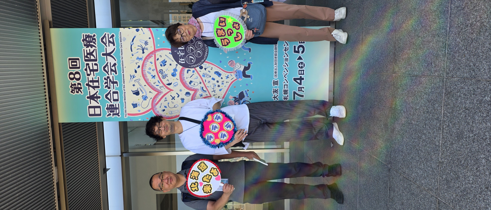
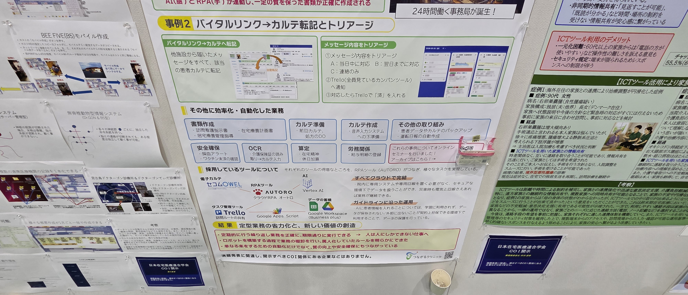
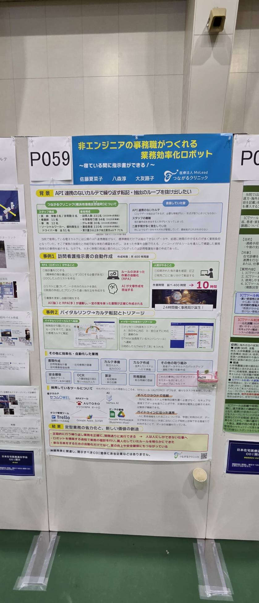
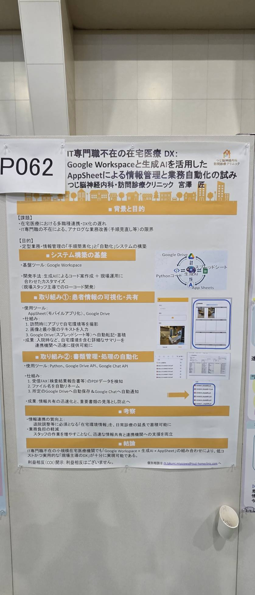
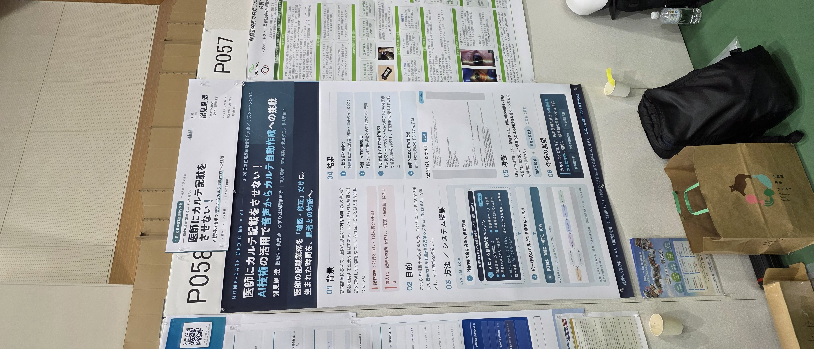
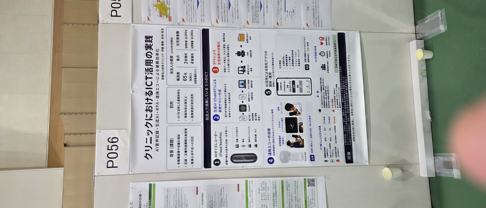
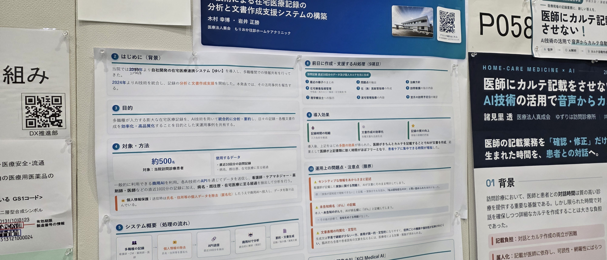
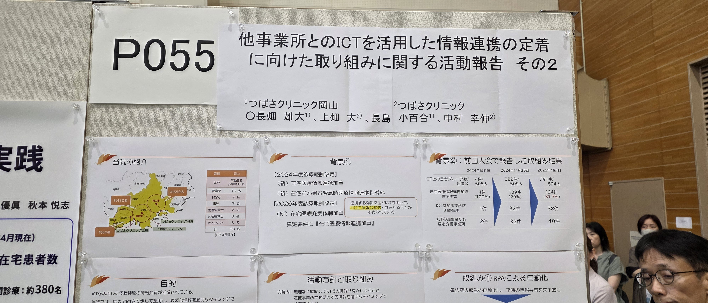
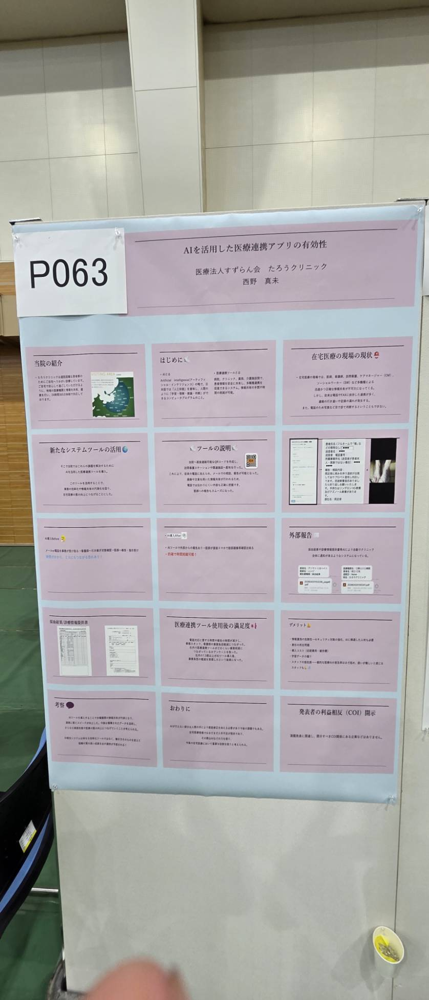
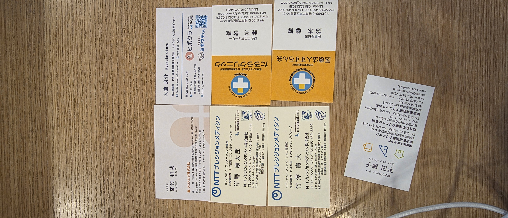

第8回 日本在宅医療連合学会（7/4〜5）に参加してきたので、ITの観点から「こんな感じだった」という話を共有します。
2日間、札幌コンベンションセンターと産業振興センターあわせて歩き回りました。ポスター回覧、ブース訪問、名刺交換が中心です。
率直に言うと、「在宅クリニックでも、AI音声カルテとRPAが普通に動いている」のが一番の収穫でした。研究発表というより「うちもこうやってます」という実践報告が並んでいて、GWS・内製・OhiScan・ORESTなど、うちがやっていることと同じ土俵にいる実感がありました。

1日目、NTTプレシジョンメディシンのモバカルネット（ブース No.25）を訪問。岸野さんに約29分、製品デモをしてもらいました（村上さんが録音、岸野さん同意済み）。新HOMIS候補として、ざっくりメモを残します。
このあと、岸野さん側から先生向けデモと簡単なアンケートのお願いあり。API仕様書の受領・一次評価 → 経営共有、が次の流れです。
7/4午後は産業振興センター、7/5午前もポスター回覧。ボードの番号（P055など）と抄録のID（P1-55 / P2-55）は別物なので、施設名で覚えるのが安全でした。

抄録（Web抄録集PDF）と現地写真を照合して、印象に残ったところだけピックアップします。
EMRにAPIがないから、事務職がAUTOROでロボを自作。訪看指示書400件/月を一晩で回す話は会場でも目立っていました。QUEEN'SさんへのRPA提案の引用ネタになりそう。

IT専門職なしで、FAX PDF→自動リネーム→Drive→Chat通知。OhiScanGoとほぼ同型。近隣のDX仲間としてフォローしたい人。

医師の仕事は「確認・修正」だけ、というスタンス。Tukusi系と同カテゴリ。うちはTukusiヘビーユーザーなので比較材料。

定例事務 110h→30h/月、文字起こし30分→8分。数値の出し方がうまい。Plaud NotePinはすぐ試せそう。



すずらん会。他院への連携報告をアプリで回している先行例。7/5に藤高さん名刺。

全部は載せませんが、フォロー優先度だけ。

学会で「他院がやっている＝うちも近い」ことを確認できたので、優先度だけメモ。
以上、札幌から持ち帰った話です。
詳細・連絡先・抄録テキストは 在宅医療学会/HANDOVER.md にあります。
気になるところがあればDX推進部まで。